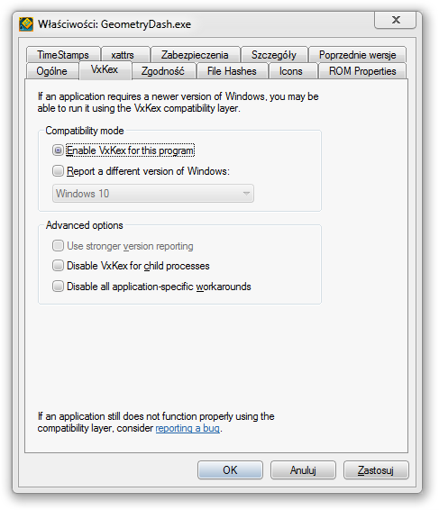
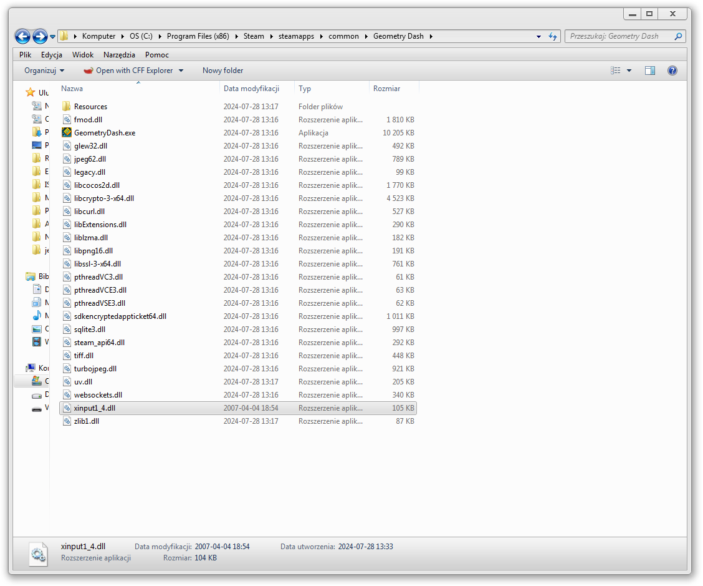
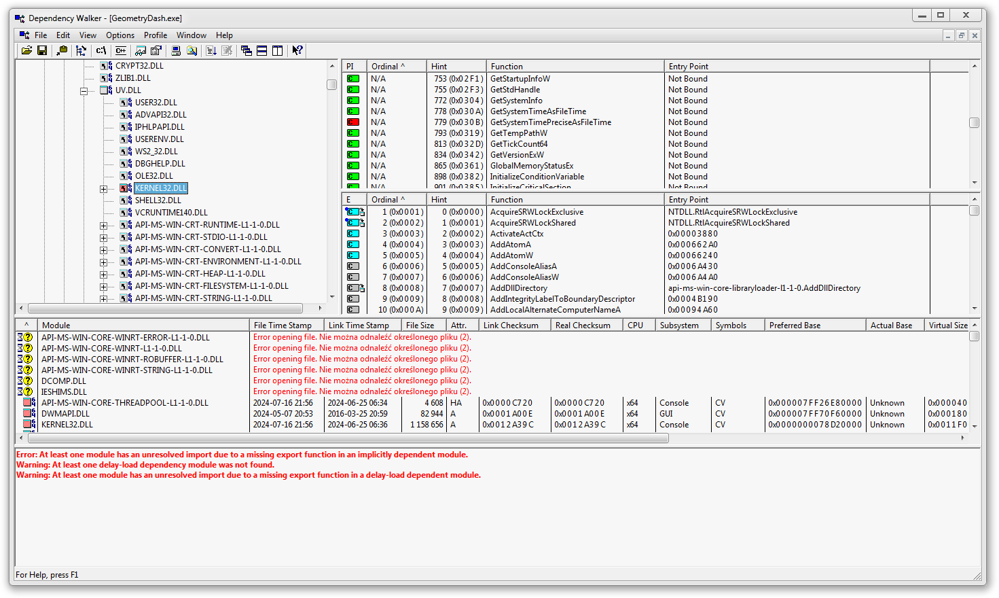
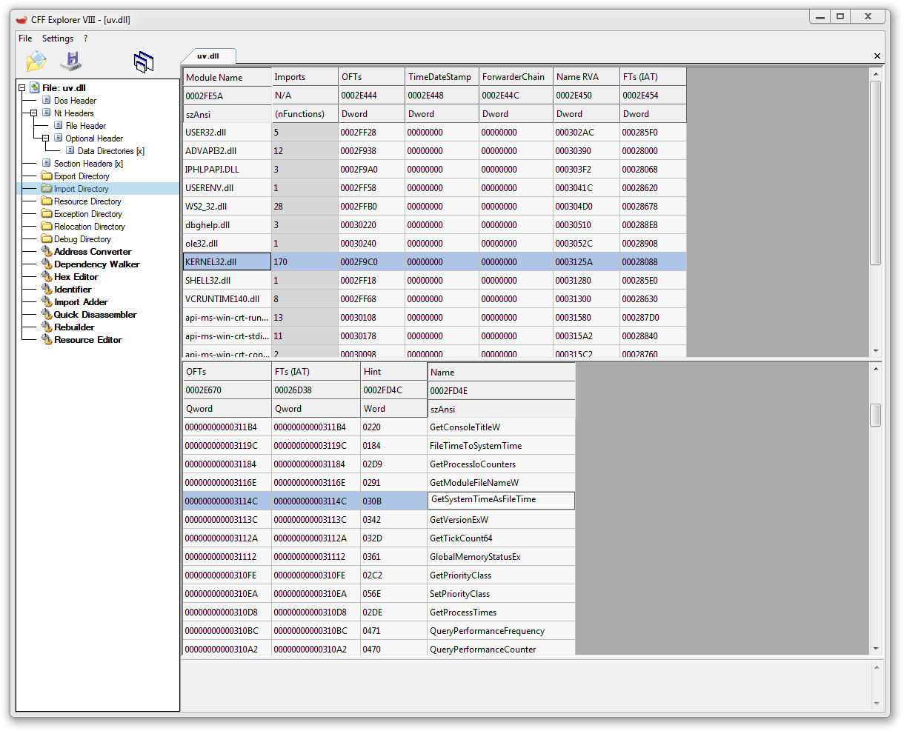

Geometry Dash 2.206 on Windows 7
How to get the latest version of Geometry Dash on Windows 7, after RobTop silently dropped support for itMethod 1: VxKex
This is a quick and dirty method, suitable only for those who don't use Mega Hack or Geode (that requires it's own steps to get working on Windows 7)
Method 2: Manual patching
This method is suitable for people who intend to use mods like Mega Hack or GeodeStep 1: Acquiring XInput1_4.dll
The first issue you'll run into is the lack of a XInput1_4.dll file. Now, the fix to that is really simple, all you need to do is go to C:\Windows\system32, take the XInput1_3.dll file, and copy it to be called XInput1_4.dll. Put it in System32 if you plan to use Mega Hack or Geode, or put it in the Geometry Dash folder if you just plan to run Geometry Dash by itself.
Step 2: Patching out the call to GetSystemTimePreciseAsFileTime
Now, that you have gotten XInput1_4.dll, you can't run the game just yet, you'll encounter an error message about the missing entry point GetSystemTimePreciseAsFileTime in KERNEL32.dll. Now, using Dependency Walker, you can see that the file that calls this function is UV.DLL.
To patch it out, you can use a tool called CFF Explorer. Download it, and open UV.DLL in it. Now navigate to Import Table, find KERNEL32.dll in there and scroll down until you find GetSystemTimePreciseAsFileTime. Change it to GetSystemTimeAsFileTime. The function you need to change is highligted in the image. 
After that, save the file. (You may need to save it somewhere else then move it into the Geometry Dash folder)